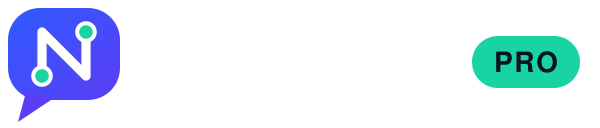
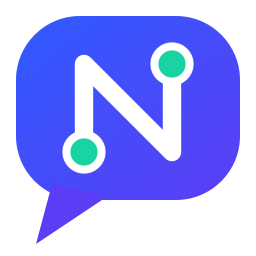
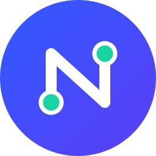

Guía rápida de marca. NexoChatPro es el CRM con asistente de IA que conecta WhatsApp, redes y ventas en una sola bandeja.
Logo

La "N" está formada por un enlace con dos nodos: la conexión (nexo) dentro de una burbuja de chat. Los nodos en menta son el sello de la marca.
Marca, avatar y favicon


Color
Azul → Índigo#2F5BFF → #5B3DF5
Principal, botones y marca
Principal, botones y marca
Menta#19D3A2
Acento, nodos y estados activos
Acento, nodos y estados activos
Tinta#0B1220
Texto y fondos oscuros
Texto y fondos oscuros
Neblina#F4F6FA
Fondos y tarjetas
Fondos y tarjetas
Tipografía
Aa NexoChat
Helvetica Neue / Arial en logo y documentos. Para web, Inter o Plus Jakarta Sans (800 para títulos, 400 para texto).
Asistente "Nexo"
Cada cliente puede darle su propio nombre al asistente (por ejemplo "Cau" en una cauchera). El estilo es el mismo: cercano, directo y breve.
- Español neutro latino, tono cordial y profesional, mensajes cortos.
- Un máximo de 1 o 2 emojis. Sin tecnicismos.
- Si no sabe algo, pasa la conversación a una persona.
Hola, ¿tienen cauchos 195/65R15?
¡Hola! Sí, tenemos tres opciones. ¿Me dices tu nombre y el modelo de tu vehículo para recomendarte la mejor? 🚗
Buen uso
- Deja un espacio libre alrededor del logo igual a la altura de la "N".
- Sobre fondos oscuros usa siempre logo-white.svg.
- No estires, gires ni cambies los colores del logo.